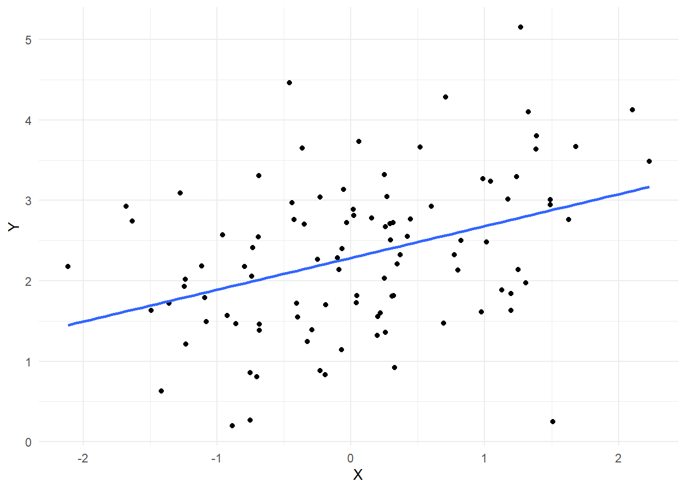

9.1 Wang, W., Rothschild, D., Goel, S., & Gelman, A. (2015). Forecasting elections with non-representative polls. International Journal of Forecasting, 31(3), 980–991
While representative polling has historically proven to be quite effective, it comes at considerable costs of time and money. Moreover, as response rates have declined over the past several decades, the statistical benefits of representative sampling have diminished. […]. After adjusting the Xbox responses via multilevel regression and poststratification, we obtain estimates which are in line with the forecasts from leading poll analysts, which are based on aggregating hundreds of traditional polls conducted during the election cycle. (p. 1)
By one measure, RDD response rates have decreased from 36% in 1997 to 9% in 2012, and other studies confirm this trend. (p. 2)
Even if the selection issues are not yet a serious problem for accuracy, as some have argued (Holbrook et al., 2007), the downward trend in response rates suggests an increasing need for post-sampling adjustments; indeed, the adjustment methods we present here should work just as well for surveys obtained by probability sampling as for convenience samples. The second trend driving our research is the fact that, with recent technological innovations, it is increasingly convenient and cost-effective to collect large numbers of highly non-representative samples via online surveys. (p. 2)
Despite the large sample size [30,000], the pool of Xbox respondents is far from being representative of the voting population. […]. The most striking differences are for age and sex.
Poststratification is a popular method for correcting for known differences between sample and target populations (Little, 1993); The core idea is to partition the population into cells based on combinations of various demographic and political attributes, use the sample to estimate the response variable within each cell, and finally aggregate the cell-level estimates up to a population-level estimate by weighting each cell by its relative proportion in the population. Using \(y\) to indicate the outcome of interest, the poststratification estimate is defined by
where \(\hat{y}_j\) is the estimate of \(y\) in cell \(j\), and \(N_j\) is the size of the \(j\)th cell in the population. (p. 3)
O autor nota analogamente que podemos derivar a estimativa \(\hat{y}^{\text{PS}}\) para qualquer nível subpopulacional \(s\) apenas limitando \(j\) a \(j \in J_s\), obtendo \(\hat{y}^{\text{PS}}_s\).
One of the most common ways to generate cell-level estimates is to simply average the sample responses within each cell. If we assume that, within a cell, the sample is drawn at random from the larger population, this yields an unbiased estimate. However, this assumption of cell-level simple random sampling is only reasonable when the partition is sufficiently fine; on the other hand, as the partition becomes finer, the cells become sparse, and the empirical sample averages become unstable. We address these issues by instead generating cell-level estimates via a regularized regression model, namely multilevel regression. This combined model-based poststratification strategy, known as multilevel regression and poststratification (MRP), has been used to obtain accurate small-area subgroup estimates, such as for public opinion and voter turnout in individual states and demographic subgroups (Ghitza & Gelman, 2013; Lax & Phillips, 2009; Park, Gelman, & Bafumi, 2004). (p. 4)
More formally, applying MRP in our setting comprises two steps. First, we fit a Bayesian hierarchical model to obtain estimates for sparse poststratification cells; second, we average over the cells, weighting the values by a measure of forecasted voter turnout, to get state- and national-level estimates. (p. 4)
We fit two nested multilevel logistic regressions for estimating candidate support in each cell. The first of the two models predicts whether a respondent supports a major-party candidate (i.e., Obama or Romney), and the second predicts support for Obama, given that the respondent supports a major-party candidate.
where \(\alpha_0\) is the fixed baseline intercept and \(\alpha_1\) is the fixed slope for Obama’s fraction of the two-party vote share in the respondent’s state in the last presidential election. The terms \(a_{j[i]}^\text{state}, a_{j[i]}^\text{edu}, a_{j[i]}^\text{sex}\) and so on – which we denote in general by \(a_{j[i]}^\text{var}\) – correspond to the varying coefficients associated with each categorical variable. Here, the subscript \(j[i]\) indicates the cell to which the \(i\)th respondent belongs. For example, \(a_{j[i]}^\text{age}\) takes values from \(\{ a_{18-29}^\text{age}, a_{30-44}^\text{age}, a_{45-64}^\text{age}, a_{65+}^\text{age} \}\) depending on the cell membership of the \(i\)th respondent. (p. 4)
As prioris dos coeficientes \(a_{j[i]}^\text{var}\) são definidos como distribuições normais com média zero e variância \(\sigma^2_{a_{j[i]}^\text{var}}\). A variância \(\sigma^2_{a_{j[i]}^\text{var}}\) é estimada a partir de uma distribuição inversa-gama com parâmetros \((v, \sigma_0^2)\).
The benefit of using a multilevel model is that the estimates for relatively sparse cells can be improved through “borrowing strength” from demographically similar cells that have richer data. Similarly, the second model is defined by:
Having detailed the multilevel regression step, we now turn to poststratification, where the cell-level estimates are weighted by the proportion of the electorate in each cell and aggregated ti the appropriate level (i.e., state or national). To compute cell weights, we require cross-tabulated population data. (p. 4-5)
However, not only are out estimates intuitively reasonable, they are also in line with the prevailing estimates based on traditional, representative polls. In particular, our estimates rougthly track – and are even arguably better than – those from Pollster.com, one of the leading poll aggregators during the 2012 campaign. (p. 5)
As was mentioned above, daily estimates of voter intent do not translate directly of vote share on election day. (p. 8)
To convert daily estimates of vote intent into election day predictions – which we refere to hereafter as calibrating voter intent – we compare the daily voter intent in previous elections to the ultimate outcomes in those elections. Specifically, we collect historical data from three previous US presidential elections, in 2000, 2004, and 2008. […]. We rely on traditional, representative polls to reconstruct historical vote intent; in principle, however, we could have started with non-representative polls if such data had been available in previous election cycles. (p. 8)
We next infer a mapping from voter intent to election outcomes by regressing the election day vote share on the historical time series of voter intent. The key difference between our approach and previous related work (Erikson & Wlezien, 2008; Rothschild, 2009) is that we model state-level correlations explicitly, via nested national and state models and correlated errorterms. Specifically, we first fit a national model, given by:
where \(y_e^{\text{US}}\) is the national election day vote share of the incumbent party candidate in election year \(e\), \(x^{\text{US}}_{t, e}\) is the national voter intent of the incumbent party candidate \(t\) days before the election in year \(e\), and \(\eta \sim \mathcal{N}(0, \sigma^2)\) is the error term. (p. 8)
In summary, the procedure for generating election day forecasts proceeds in three steps:
Estimate the joint distribution of state and national voters intent by applying MRP to the Xbox data, as described in Section 3.
Fit the nested calibration model described above to historical data in order to obtain point estimates for the parameters, including estimates for the error terms.
Convert the distribution of voter intent to election day forecasts via the fitted calibration model. (p. 8)
Nevertheless, we show that the MRP-adjusted and calibrated Xbox estimates are intuitively reasonable, and are also similar to those generated by more traditional means. (p. 11)
9.2 Hanretty, C. (2020). An Introduction to Multilevel Regression and Post-Stratification for Estimating Constituency Opinion: Political Studies Review, 18(4), 630–645
Multilevel regression and post-stratification (MRP) is a technique for estimating public opinion in small areas using large national samples. ‘Small areas’ are usually anything smaller than nations, and past work using MRP has produced estimates for areas as large as US states (average population: 6.5 million) to areas as small as Westminster constituencies (average population: 100,000). (p. 630)
MRP is used because the alternatives are either very poor or very expensive. A poor alternative is simply splitting a large sample into (much) smaller geographic subsamples. This is a poor alternative because there is no guarantee that a sample which is representative at the national level will be representative when it is broken down into smaller groups. […].
An expensive alternative is conducting polls in each small area for which we want to estimate public opinion. This strategy is possible where the number of small areas is relatively small. […]. (p. 631)
There are four stages which must be carried out when conducting an analysis of local opinion using MRP:
Conduct or compile survey information which contains information on respondents’ opinions regarding some political or social issue, and information on respondents’ background characteristics, and information on which small area the respondent lives in;
Compile information on relevant charactertistics of the small areas in questions;
Estimate a multilevel regression model using the information from the first and second stages;
Obtain or construct a post-stratification frame which contains information on the joint distribution of respondent background characteristis by small area;
Make predictions from the multilevel regression model estimated in stage 3 for each row in the post-stratification frame, and aggregate these predictions to the level of the small area. (p. 632)
Estimates of opinion in small areas has to be based on survey responses. Researchers may be in the fortunate position of being able to commission original survey research. Or, researchers may have access to the raw data from an existing large survey. Finally, researchers may have access to several smaller surveys which they can combine. (p. 632)
Very often descriptions of MRP do not discuss the process of gathering constituency information. This is unfortunate. The accuracy of MRP estimates can be more strngly affected by the inclusion of good constituency predictions than by the details of the poststratification frame. (p. 633)
Multilevel regression models are models where the parameters in the model apply to different levels. In MRP models, these levels are usually hierarchically organised. That is, the model uses information about respondents (level \(1\) information), but also information about the small areas in which respondents are located (level \(2\) information), and possibly also information about broader groupings of small areas like regions (level \(3\) information).
One key part of MRP models is the effect associated with each small area, which some researchers describe as a random intercept. These constituency effects are drawn from a common distribution. This allows for small area estimates to be idiosyncratic, given what we know and can measure about the people who live in them and their other characteristics. Crucially, it allows for these idiosyncrasies to borrow strength from one another. Because random intercepts are drawn from a common distribution, information about a different small area can affect our estimate of the effect associated with one respondent’s area. If evidence from another area suggests that the effect associated with that area is very large, it can mean that the distribution of area effects generally contains very large values. This might in turn mean that we estimate a larger value of the area effect for the area we started with. (p. 633-634)
In the context of MRP, a post-stratification frame is a large rectangular data frame which contains, for each small area, all the possible combinations of respondents characteristics, together with either the count or the proportion of residents of each area who have those chacaracteristics. (p. 634)
The simple way of producing a joint distribution is to use information on the marginal distribution of variables (which Census authorities do release at small area level), and assume that these variables are independent. Thus, the proportion of women who are aged 25-34 is equal to the proportion of women, times the proportion of people aged 25-34. This is a poor way of producing joint distributions, because important social and political variables are often associated with one another. In the UK, the proportion of people aged 55-64 with a university degree is substantially lower than the proportion of people aged 55-64 times the proportion of people with a university degree, because university education has become more popular over time. (p. 634-635)
The elaborate way of producing a joint distribution for each small area is to take some existing joint distribution (perhaps the join distribution at national level, or the joint distribution from the survey), and ‘rake’ these join distributions to match the known marginal distribution at the level of the small area. (p. 634-635)
If researchers are able to estimate a model, and able to obtain a post-stratification frame, then the last stage should be comparatively easy. All that is required is to generate predicted values for each row in the post-stratification frame using the parameter values from the estimated regression model. These might be predicted probabilities (for a dichotomous outcome) or predicted values (for a continuous outcome). These predicted values can then be multiplied by the proportion given in the post-stratification frame, and added together to give the proportion or count at the level of the constituency.
When estimates of uncertainty are required (and estimates of uncertainty are always useful) then predicted values can be repeatedly generated using different draws from the posterior distribution of the model. (p. 635)
Surveys might ask about rates of satisfaction with ‘your local MP’, or ‘your local police service’. It would be wrong to model these kinds of opinions using MRP, because the same process would not govern the responses given. (p. 636)
If the sample is non-representative because certain characteristics are over- (under-) represented, and those characteristics are included in the post-stratification frame, then MRP can do well. Wang et al. (2015) used data from a survey of Xbox users to predict the results of the 2012 presidential election. Xbox users are not a representative sample of the population: they are much younger and much more likely to be male. However, those demographic characteristics are present in most post-stratification frames. (p. 637)
9.3 Lax, J. R., & Phillips, J. H. (2009). How Should We Estimate Public Opinion in the States. American Journal of Political Science, 53(1), 107–121
Unfortunately, measuring state opinion is not easy. Despite the proliferation of public opinion polls, state-level surveys are still quite rare. Finding comparable surveys across all (or even many) states is nearly impossible. And, while most national poll data include the home state of the respondents, there are almost always too few respondents within each state to be considered an adequate sample. (p. 107)
As an alternative [to disaggregation], recent work by Park, Gelman, and Bafumi (2006) presents a new version of simulating state opinion, based on multilevel regression and poststratification (MRP). This has the potential to combine the best features of both disaggregation and simulation techniques. It revives the old simulation method, incorporating demographic information to improve state estimation, while allowing for nondemographic differences between states. That is, opinion is modeled s a function of both demographics and state-specific effects. The estimation of these effects is improved by using a multilevel model and partially pooling data across states (to an extent warranted by the data). Predictions are made for each demographic-geographic respondent type, and these predictions are then poststratified (weighted) by population data. The drawback here is the need to detailed demographic data on respondents and states, along with greater methodological complexity. (p. 108)
Most importantly, we show that (1) MRP should be employed when data samples are small to medium size; (2) for very large samples, the gain from MRP are less likely to be worth its implementation costs; (3) relatively simple demographic typologies can suffice for MRP, but additional demographic information improves estimation; and (4) MRP can be used successfully even on small samples, such as individual national polls. (p. 108)
It [multilevel modeling with Bayesian statistics] improves upon the estimation of the effects of individual- and state-level predictors by employing recent advances in multilevel modeling, a generalization of linear and generalized linear modeling, in which relationships between grouped variables are themselves modeled and estimated. This partially pools information about respondents across states to learn about what drives individual responses. Whereas the disaggregation method copes with insufficient samples withing states by combining many surveys, MRP compensates for small within-state samples by using demographic and geographic correlations. (p. 109)
A multilevel model pools group-level parameters towards their mean, with greater pooling when group-level variance is small and more smoothing for less populated groups. The degree of pooling emerges from the data, with similarities and differences across groups estimated endogenously. (p. 111)
Além disso, cada um dos parâmetros \(\alpha\) é modelado como uma distribuição normal com média \(0\) e variância \(\sigma^2\). Os autores utilizam a seguinte notação:
In short, the bulk of gains from MRP over disaggregation are achieved not from simple pooling of states towards the national mean, but due to the more accurate modeling of responses by demographic-geographic type. We, of course, recognize that this is not the last word on the subject but rather that others might wish to explore how much further one can push the envelope and to assess how large the gains are from MRP in varying contexts (we begin this process in the replication section below). (p. 116)
Finally, and perhaps most importantly, MRP does well in an absolute sense regardless of sample size. This approach, if implemented using a single, large national survey, produces estimates of state-level public opinion that are virtually as accurate as those it generates using 10 or more surveys. (Note that these gains from MRP exist even when we use disaggregation itself to set the baseline measure of opinion.) (p. 120)
This will greatly enhance research into the responsiveness of state governments. Additionally, since MRP can effectively be used with relatively little data and simple demographic typologies, it can also be applied to studies of public opinion over smaller time periods or in smaller geographic units, such as congressional districts or school districts, for which detailed demographic data are limited, or for other subsets of the population. (p. 121)
9.4 Buttice, M. K., & Highton, B. (2013). How does multilevel regression and poststratification perform with conventional national surveys? Political Analysis, 21(04), 449–467.
To investigate this aspect of MRP and explain its variation in performance, we analyze MRP opinion estimates for eighty-nine survey items and conduct a host of Monte Carlo simulations. We find that when MRP is used with national surveys of typical size, its performance is highly variable. The sources of the variation in MRP performance derive from properties of the MRP model and the nature of the distribution of the opinion being estimated. The findings of this article therefore imply important qualifications to the initial views. (p. 450)
Some common limitations keep survey disaggregation from more widespread use. First, large national surveys are rare and expensive. Second, in instances where large national surveys that include the desired measures and geographic identifiers are available, scholars are often limited to cross-sectional analyses due to the lack of over-time data. Third, pooling surveys requires that identical (or very similar) questions be asked in repeated national samples, and this is an uncommon occurrence. […]. It is against this backdrop that Lax and Phillips (2009b) ask “How Should We Estimate Public Opinion in the States?” and Warshaw and Rodden (2012) ask “How Should We Measure District-Level Public Opinion on Individual Issues?” Both provide the same answer: MRP. (p. 450)
As sample sizes get smaller and approach those of typical national surveys, the sampling errors associated with the DM estimates grow, thereby driving down their performance. In contrast, the multilevel model in MRP places less weight on group-level variation as sample sizes decline, thereby limiting the effect of sampling error and avoiding the cause of performance falloff for DM. Thus, while DM necessarily suffers as sample sizes decline, MRP may not. (p. 452)
In light of the uses for which MRP has already been employed and to which it could be employed in the future, a critical question is whether MRP consistently performs well with samples the size of typical national surveys. (p. 453)
The analysis of eighty-nine policy items and Monte Carlo simulations substantiates the key proposition that with samples the size found in typical national surveys, the performance of MRP is highly variable. Sometimes MRP produces opinion estimates that correlate strongly with true values, have little bias, modest error, and reasonable coverage; sometimes they do not. […]. In contemporary American politics, there is greater geographic heterogeneity on cultural issues than on other issues, and this variation is more readily accounted for by the sort of geographic covariates typically used in MRP analyses. (p. 462-463)
Therefore, when Lax and Phillips (2012) report that the relationship between MRP opinion estimates and policy adoption varies in strength across the policies, it is unclear whether it represents true variation in responsiveness, as Lax and Phillips (2012) conclude, or whether it only appears that responsiveness varies because of the variation in the quality of the MRP estimates across policies. (p. 463)
The difficulty posed by the need for strong geographic predictors is increased because in any applied MRP analysis, one only has a sample of opinions from the population. The population-level parameters necessary for assessing the quality of the MRP estimates are, of course, unavailable. Researchers cannot empirically determine the strength of their geographic-level covariates. 22 The implication is that when MRP is used with conventional national survey samples, a persuasive theoretical argument should accompany the description of the covariates included in the multilevel model. Researchers should explain why there is good reason to believe that the geographic covariates are strong proxies for the opinion being estimated. (p. 464)
After extensive analysis with actual and simulated survey data, the key factors we have identified that determine how well MRP performs are the strength of the geographic-level covariates included in the multilevel model of opinion and the ratio of opinion variation across geographic units relative to opinion variation within units. When these values are sizable, then MRP will often produce reliable estimates from national surveys of conventional size. However, the empirical analysis suggests that often these conditions will not be satisfied. Certainly scholars should not assume that they are met. One should therefore not presume that the properties of the MRP model are sufficient to produce the desired opinion estimates from conventional national survey samples. (p. 465)
9.5 Other materials
Multilevel regression and post-stratification case studies, by Lopez-Martin, J., Phillips, J. H., & Gelman, A. (2022). O que achei legal desse material é que ele inclui uma série de estudos de caso, com dados e código, que mostram como aplicar MRP em diferentes contextos. Vale voltar nele depois, especialmente quando for aplicar MRP.
9.6 Anotações de aula
MrP provavelmente é o grande avanço na pesquisa de survey possivelmente desde RDD. O que ele faz é usar um modelo de regressão multinível para estimar a opinião pública em subpopulações, como distritos eleitorais ou estados, a partir de uma amostra nacional. Isso é especialmente útil quando a amostra é pequena ou não representativa. O modelo usa informações demográficas e geográficas para fazer previsões mais precisas.
Até agora, viemos fazendo inferência com base em desenho. Nesse caso, todo mundo tem mais ou menos a mesma chance de ser selecionado. Pelo mecanismo de aleatoriedade, a minha amostra vai acabar espelhando a população de fundo – daí, basta usar estimadores muito simples para fazer inferências sobre a população. Essencialmente é a lógica de experimentos – espero, em média, que o grupo seja igual ao controle (ou que a amostra espelhe a população). No entanto, na maior parte do tempo não temos essas amostras. Na prática, as amostras não são probabilísticas e, no final, a amostra não é representativa.
Agora, vamos partir para o paradigma de inferência baseada em modelo (model-based inference). Eu não sei como a amostra foi feita e muito menos sei qual é a probabilidade de inclusão de um respondente na amostra.
💡 MrP (Multilevel Regression with Poststratification) é uma forma de inferência baseada em modelo que usa um modelo de regressão multinível para modelar o processo gerador de dados. Assim, não precisamos proceder como uma amostra probabilística. Eu posso criar um modelo de regressão para estimar a probabilidade de alguém ser incluído na amostra.
O modelo de MrP precisa aprender a modelar as respostas individuais das pessoas. Vamos supor:
library(ggplot2)# vamos supor que assim um dado eh produzido# i.e., o processo gerador de dadosbeta_0 <-2.2# interceptobeta_1 <-0.5# coeficiente de XX <-rnorm(100)erro <-rnorm(100, 0, 1)Y <- beta_0 + beta_1 * X + errodf <-data.frame(X, Y)# plota a relaçãoggplot(df, aes(x = X, y = Y)) +geom_point() +geom_smooth(method ="lm", se =FALSE) +labs(x ="X", y ="Y") +theme_minimal()
`geom_smooth()` using formula = 'y ~ x'

# vamos estimar os parametros do modelo# e recuperar algo proximo desse 2.2 e 0.5model <-lm(Y ~ X, data = df)summary(model)
Call:
lm(formula = Y ~ X, data = df)
Residuals:
Min 1Q Median 3Q Max
-3.4060 -0.7006 0.1075 0.5753 2.6689
Coefficients:
Estimate Std. Error t value Pr(>|t|)
(Intercept) 2.1982 0.1046 21.014 < 2e-16 ***
X 0.6027 0.1130 5.332 6.23e-07 ***
---
Signif. codes: 0 '***' 0.001 '**' 0.01 '*' 0.05 '.' 0.1 ' ' 1
Residual standard error: 1.044 on 98 degrees of freedom
Multiple R-squared: 0.2249, Adjusted R-squared: 0.217
F-statistic: 28.43 on 1 and 98 DF, p-value: 6.231e-07
No fundo, o MrP serve para gerar predições para cada tipo de segmento de uma população. Exemplo:
onde \(X_n\) é a matriz de covariáveis mensuradas no nível da UF.
9.6.1 Agregação
Tendo um modelo multinível ajustado para predizer respostas individuais a partir de variáveis demográficas e contextuais, o próximo passo é agregar as previsões por subunidade/subgrupo. Passo a passo:
Usa o modelo para atribuir \(\mathbb{P}(y_i = 1)\) para cada unidade \(i\)
Cada predição é multiplicada pela contagem populacional de cada tipo na população (e.g., mulheres, 18-24 anos, etc.)
As previsões são agrupadas por subunidade/subgrupo
A segunda etapa, portanto, é a pós estratificação propriamente:
onde \(N_g\) é o número de pessoas no grupo \(g\) e \(\hat{\pi}_g\) é a predição do modelo para o grupo \(g\). O resultado final é uma estimativa da proporção de pessoas que responderam \(1\) (seja lá o que \(1\) significa na variável resposta) na população.
Os dados do survey são usados unicamente para ajustar os parâmetros do modelo. Depois disso, basta fazer as predições desse modelo no banco de dados de totais populacionais – conseguida a partir de bases importantes como o Censo ou a PNAD.
9.6.2 Incerteza
No caso bayesiano, a incerteza é tranquilamente incorporada ao modelo. Afinal, bastaria tirar diferentes amostras da posteriori para obter intervalos de credibilidade para as predições. No caso frequentista, a incerteza precisa ser aproximada por bootstrapping. Nos dois casos, intervalos são aproximações (e, normalmente, é demorado calculá-los).
9.6.3 Outros pontos de atenção
MrP é sensível à especificação do modelo
MrP depende imensamente dos dados de estratificação
MrP não ajuda muito a corrigir erros de mensuração
A não-resposta não ignorável não é corrigida pelo MrP. Você passa por um bolsonarista ou um trumpista na rua e ele terminantemente se recusa a te dar uma resposta, não há correção por MrP.